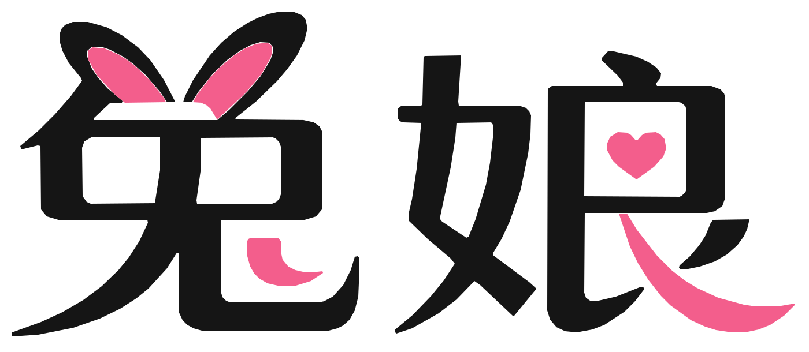

永久收藏页 · 防走丢
正在确认官网状态…
迷路了？
从这里回到兔娘
请认准唯一官网地址。建议收藏本页，下次入口找不到时，随时回来。
tuniang.ai
立即回到兔娘
先把回家的路保存好
30 秒完成收藏这个防走丢页面电脑按 Ctrl/⌘ + D，手机使用浏览器收藏。
添加到手机主屏幕像 App 一样放在桌面，轻点即可回来。
认准这两个地址
谨防仿冒兔娘官网https://tuniang.ai/
永久收藏页正在读取当前地址…
本页只负责带你回到 tuniang.ai，不会索要账号、密码或验证码。
若官网暂时无法打开，请稍后重试或切换网络。